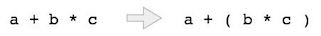

The way to write arithmetic expression is known as notation. An arithmetic expression can be written in three different but equivalent notations, i.e., without changing the essence or output of expression. These notations are −
These notations are named as how they use operator in expression. We shall learn the same here in this chapter.
We write expression in infix notation, e.g. a-b+c, where operators are used in-between operands. It is easy for us humans to read, write and speak in infix notation but the same does not go well with computing devices. An algorithm to process infix notation could be difficult and costly in terms of time and space consumption.
In this notation, operator is prefixed to operands, i.e. operator is written ahead of operands. For example +ab. This is equivalent to its infix notation a+b. Prefix notation is also known as Polish Notation.
This notation style is known as Reversed Polish Notation. In this notation style, operator is postfixed to the operands i.e., operator is written after the operands. For example ab+. This is equivalent to its infix notation a+b.
The below table briefly tries to show difference in all three notations −
| S.n. | Infix Notation | Prefix Notation | Postfix Notation |
|---|---|---|---|
| 1 | a + b |
+ a b |
a b + |
| 2 | (a + b) * c |
* + a b c |
a b + c * |
| 3 | a * (b + c) |
* a + b c |
a b c + * |
| 4 | a / b + c / d |
+ / a b / c d |
a b / c d / + |
| 5 | (a + b) * (c + d) |
* + a b + c d |
a b + c d + * |
| 6 | ((a + b) * c) - d |
- * + a b c d |
a b + c * d - |
As we have discussed, it is not very efficient way to design an algorithm or program to parse infix notations. Instead, these infix notations are first converted into either postfix or prefix notations and then computated.
To parse any arithmetic expression, we need to take care of operator precedence and associativity also.
When an operand is in between two different operator, which operator will take the operand first, is decided by the precedence of an operator over others. For example −
As multiplication operation has precedence over addition, b * c will be evaluated firs. A table of operator precedence is provided later.
Associativity describes the rule where operators with same precedence appear in an expression. For example, in expression a+b−c, both + and − has same precedence, then which part of expression will be evaluated first, is determined by associativity of those operators. Here, both + and − are left associative, so the expression will be evaluated as (a+b)−c.
Precedence and associativity, determines the order of evaluation of an expression. An operator precedence and associativity table is given below (highest to lowest) −
| S.n. | Operator | Precedence | Associativity |
|---|---|---|---|
| 1 | Esponentiation ^ | Highest | Right Associative |
| 2 | Multiplication ( * ) & Division ( / ) | Second Highest | Left Associative |
| 3 | Addition ( + ) & Subtraction ( − ) | Lowest | Left Associative |
The above table shows the default behavior of operators. At any point of time in expression evaluation, the order can be altered by using parenthesis. For example −
In a+b*c, the expression part b*c will be evaluated first, as multiplication as precedence over addition. We here use parenthesis to make a+b be evaluated first, like (a+b)*c.
We shall now look at the algorithm on how to evaluate postfix notation −
Step 1 − scan the expression from left to right Step 2 − if it is an operand push it to stack Step 3 − if it is an operator pull operand from stack and perform operation Step 4 − store the output of step 3, back to stack Step 5 − scan the expression until all operands are consumed Step 6 − pop the stack and perform operation
To see the implementation in C programming language, please click here.